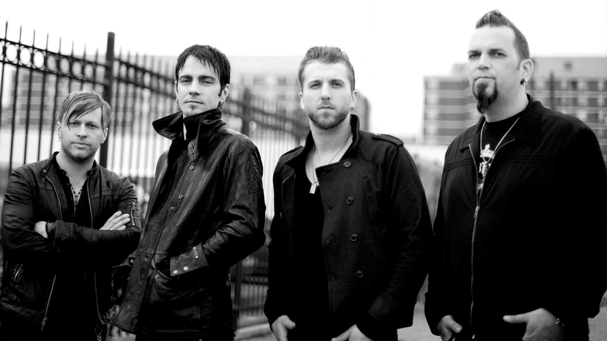

About Three Days Grace
Three Days Grace is a Canadian rock band formed
in Norwood, Ontario, in 1992 originally as Groundswell.
Groundswell played in various local Norwood backyard parties
and area establishments before disbanding in 1995 and regrouping in 1997 under
its current name.
Based in Toronto, the band's original line-up consisted of guitarist and lead
vocalist Adam Gontier, drummer and backing vocalist Neil Sanderson,
and bassist Brad Walst. In 2003, Barry Stock was recruited as the band's lead guitarist,
making them a quartet. In 2013, Gontier left the band and was replaced by Walst's younger brother Matt Walst, who
was previously the lead singer of My Darkest Days.
Why I love Three Days Grace
Three Days Grace is a rock band that I grew up loving due to their deep lyrics mixed with a strong bass, which makes their music enoyable to listen to. Their music is catchy, deep, and has great instrumentals which is exactly what I like in a rock band.
